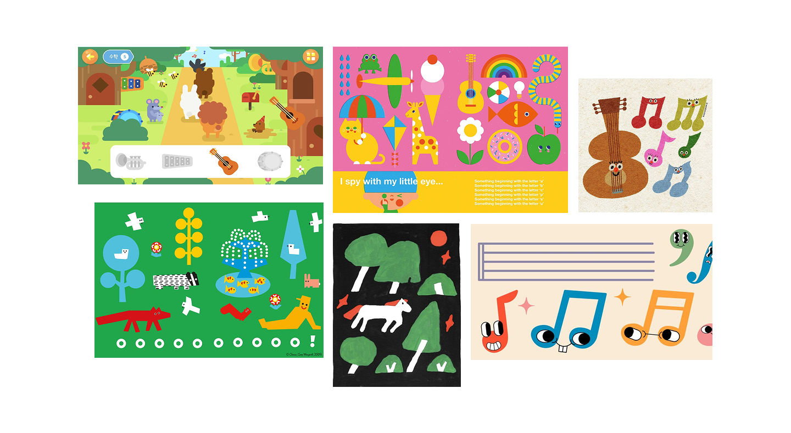
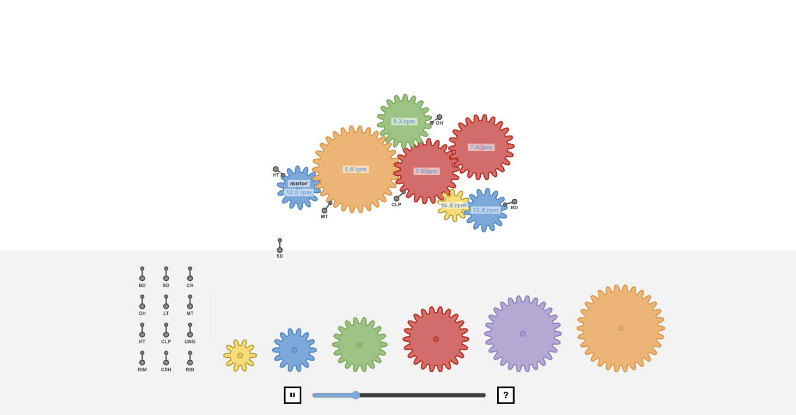
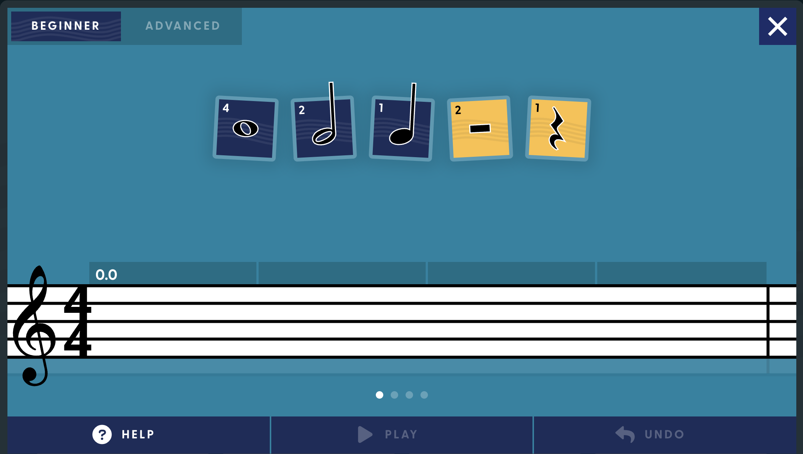
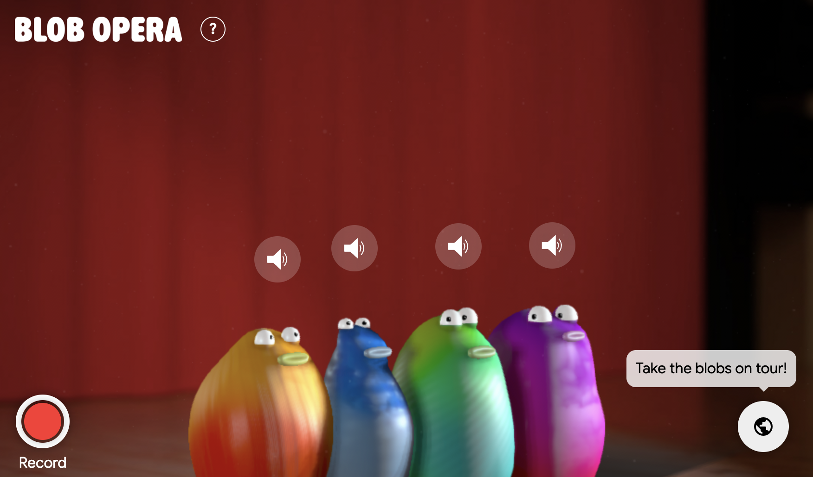
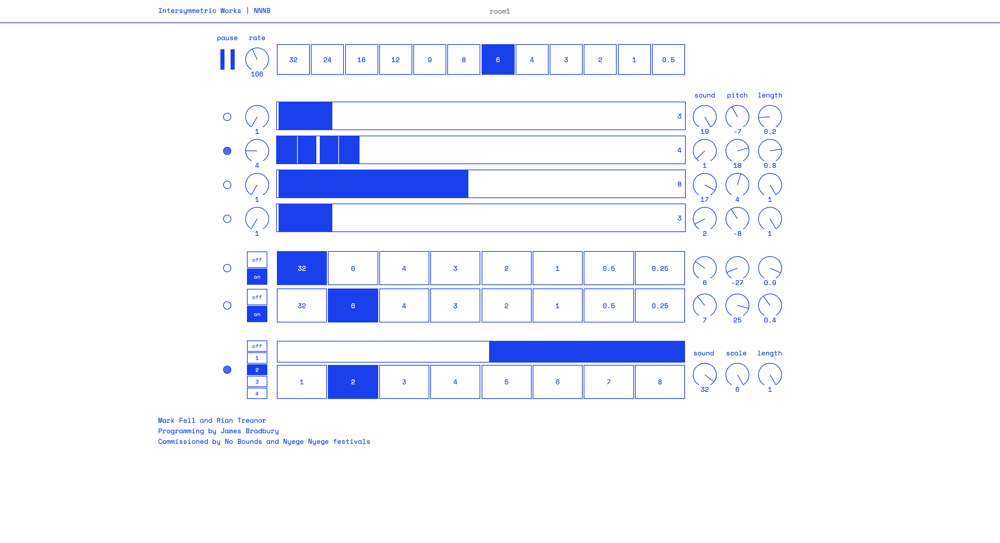

1. Design Scenario Analysis and Response
1.1 Scenario
The goal of this project is to develop a browser-based musical instrument for young children with limited language skills in response to Scenario 3: Musical Toy for Toddlers. To create a browser music toy that is suitable for toddlers, this design focuses on simple and intuitive interactions, allowing children to explore music without the need to read text or understand complex operations.
1.2 Discussion
I believe that curiosity is a key element in early childhood education. Thus, instead of limiting children to one correct way of creating music, the instrument should offer an open-ended experience for children to explore freely and make up their own melodies.
1.3 Purpose
On this website, children can explore the sounds of different animals and create simple melodies without relying on written instructions. Through playful interactions, they learn by experimenting with sounds and discovering the relationship between movement and music.
1.4 Worth
Besides introducing children to music and different animal sounds, the website encourages them to develop curiosity, creativity and confidence through playful exploration.
2. Project Overview
2.1 Brief Synopsis
On this website, children can explore animal sounds and create simple melodies through play. By dragging animal characters to different positions, they can discover how movement changes pitch and experiment with making their own music.
2.2 Response to the Scenario
The website will provide instant audio and visual feedback, encouraging toddlers to freely create their own melodies through continuous trial and exploration. It allows kids to manipulate animal figures and create original songs. They learn through experimenting and discovery rather than by sticking to guidelines or instructions. This makes music accessible to young children while encouraging creativity, curiosity, and independent play.
3. Project Framing
Concept
Animal Music Lines is a fun browser-based musical toy that allows youngsters to create simple melodies by dragging animal figures to various positions on music lines. The initiative promotes musical exploration through movement, play, and creation.
Characterisation

MoodBoard
The instrument is designed to be fun, playful and user-friendly. It features a simple interface with clear instructions, allowing young children to interact with the instrument easily and explore music without feeling overwhelmed.
Techniques and Technologies
The project will be built using HTML, CSS and JavaScript, and will be browser-based. It will be based on Tone.js to create musical notes and Spatial Input extended technique. Children drag the animal characters and play them according to their position, giving them a pitch.
The project will include:
- Browser-based interaction
- Drag-and-drop animal characters
- Spatial Input (mousemove)
- Five music lines
- Simple melodies
- Immediate audio feedback
- Simple visual feedback
- Reset button
The project will exclude:
- Written tutorials
- Complex menus
- Music notation
- Scoring system
- Multiplayer features
- Recording functions
4. Interaction Design Analysis
Example 1:
Gear Ratio Drum Machine

Focus： Feedback
Analysis
It features a simple, minimal interface that can make complex drum programming seem understandable. The interactive gears visually demonstrate how movement and sound are connected, enabling the user to see how changing one will affect the rhythm. The audio feedback is immediate, making the users aware of the consequences of their actions, which allows them to experiment and explore playfully without having to follow a strict set of instructions. Despite the complexity of the rhythms created, the interaction is intuitive thanks to simple visuals and a real-time feedback.
Impact
This influenced my project by using simple visual interactions rather than complex controls. In my project, the children aren't going to manipulate musical parameters, but they will be dragging animal characters to create melodies. Instant feedback of sounds will enable the children to make connections between what they do and what they hear, like the Gear Ratio Drum Machine, which will facilitate exploration through play.
Example 2:
Classics for Kids - Compose Your Own Music

Focus： Purpose
Analysis
The design purpose of Compose Your Own Music is to let kids’ music creation through a simple and accessible interface. Besides using the unnecessary complexity of music tools, clean website interfaces and easy interactions allowing children to focus on experimenting with sounds rather than learning complicated controls. The whole process of creation is to focus on expiration.
Impact
The design purpose of Compose Your Own Music is to let kids’ music creation through a simple and accessible interface. Besides using the unnecessary complexity of music tools, clean website interfaces and easy interactions allowing children to focus on experimenting with sounds rather than learning complicated controls. The whole process of creation is to focus on expiration.
Example 3:
Blob Opera

Focus： Characterisation
Analysis
The Colorful blob characters, expressive animation and easy drag interactions make Blob Opera a fun and friendly musical experience. The friendly visual style makes creating music fun, not technical.
Impact
It inspired me to take "fun and playful" as the overall design direction. I will use colourful animal characters. And for the interface, it should be simple, user-friendly and clear visual instructions to enable young children to naturally understand the interaction methods and explore music in a relaxed environment without relying on textual explanations. The design purpose of Compose Your Own Music is to let kids’ music creation through a simple and accessible interface. Besides using the unnecessary complexity of music tools, clean website interfaces and easy interactions allowing children to focus on experimenting with sounds rather than learning complicated controls. The whole process of creation is to focus on expiration.
Example 4:
Inter-symmetric (NNB) - Mark Fell, Rian Treanor and James Bradbury

Focus： Information Design
Analysis
Inter-symmetric (NNB) adopts a simple and highly visual interface, organizing information with geometric shapes and consistent layout, reducing textual descriptions, and encouraging users to understand the operation mode of the interface through interaction and exploration.
Impact
This website inspired me to reduce text instructions. Guide children to operate with more intuitive visual elements by using animation guides and simple layout, letting children learn through observing and exploring how to create music. At the same time, I also hope that each interactive element has a clear function and position, enabling children to quickly establish a connection between operation and sound, enhancing the overall usage experience and exploration willingness.